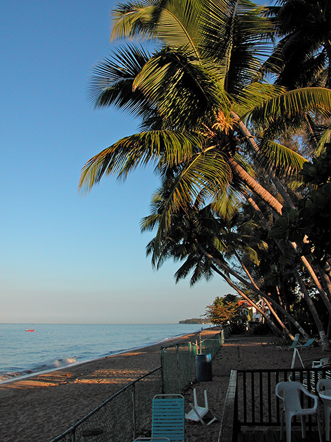
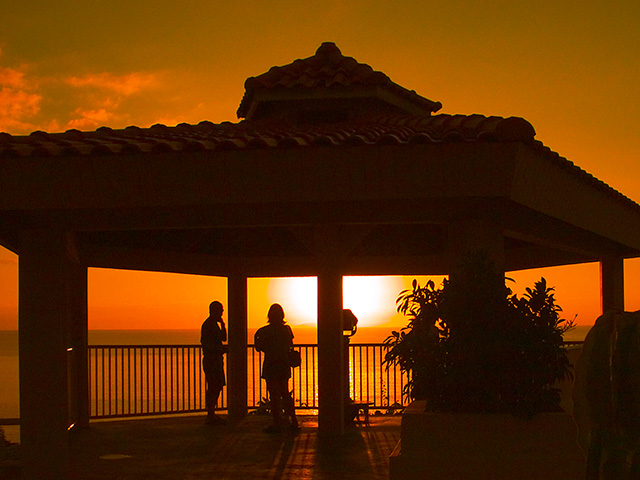

I see that Ted Neward has been writing about the GAC. In particular, Ted writes "One uses the GAC to put assemblies into place that should be shared across applications".
I disagree. The only reason to put your assembly into the GAC is if you take the following oath: "I promise to NEVER EVER make any breaking changes in future versions of this assembly." This is the oath that MS took when it created mscorlib.dll and friends. And MS devotes a tremendous amount of time, energy and ultimately money to make those kinds of guarantees. And even MS has to make breaking changes occasionally.
Most folks don't take that oath. Therefore I would argue that assemblies like Genghis do not belong in the GAC. They should be shipped as private assemblies instead.
While teaching my ASP.NET class in Little Rock, AR I had an opportunity to make the acquaintance of a swan named Chase. He was one mean swan! He was named Chase by the locals because that was his favorite activity: chasing people away from "his" pond.
The first two shots shown below were shot from a bridge at the far end of the pond. I decided to go to the bridge because I figured that it would be hard for him the "get me" if I was standing on the bridge looking down at him. Sure enough, as I walked around the pond he followed me. You could see him pick up the pace as he saw me approach his pond.
Once I got to the bridge, he took up position under the bridge to make sure that I couldn't get away. This gave me all the time in the world to shoot some photos of him. To get the exposure I wanted, I metered off the swan using my spot meter. I applied +1EV to the meter reading and shot. When I checked my exposure using the histogram, it looked like I nailed it, so I shot the rest of my pictures of him using that setting. Here are my favorite shots of him:


These were all shot as NEF shots, and I applied a further +0.3EV correction when I imported the images into Photoshop CS. The only adjustments that I had to make in Photoshop was a bit of unsharp mask since the images were already tack-sharp out of the camera.
This final shot happened when I walked back around to the other side of the pond. I crouched on the grass and Chase (and Lily - his girlfriend) decided to come out of the water to kick my ass. This picture was the last one in a sequence that I shot using the JPG burst mode in my camera. He was about 3 feet away when I decided to turn and run :)

I didn't get a chance to spot meter in this case, so I shot using the matrix metering mode of the camera. I had to do a lot more post processing to get this shot the way I wanted: some shadows and highlights in PS, some levels adjustment, and some unsharp mask. I'm not sure whether it is better to shoot using the AF-S (single shot autofocus) vs. the AF-C (continuous autofocus) mode during a burst sequence. I have to admit that I didn't know how to turn on AF-C when I shot that photo :)
After almost two years with the Nikon 5700, I decided it was time to upgrade the camera. The 5700 is a wonderful camera for outdoor landscape shots under optimal lighting. However, it was hampered by a few significant shortcomings:
Things got really difficult when I wanted to shoot some photos of my son Matthew, since most of those shots were going to happen indoors. All of these factors convinced me that it was time to upgrade to a DSLR.
The camera that caught my eye was the Nikon D70. For $999, it looked to me to be the best deal going. The one feature that I couldn't live without was my spot meter, and Canon doesn't have one in their 300D/10D line of DSLRs. When I went to the store, they were out of D70 + kit lens (an 18-70 F/3.5-4.5 lens) packages. So I picked up a 50mm F/1.8D and a Tamron 19-35mm F/3.5-4.5 wide-angle zoom.
So far I've pretty well exclusively used the 50mm prime lens. It forces me to think a lot more about composition since I can't just stand somewhere and zoom in and out. I have to move around until I get a shot that fills the frame. It's also an incredibly sharp lens - I get detail out of this lens / camera combination that I could never get with the 5700, even though it purportedly has better glass (ED vs. D glass).
The reflexes of this camera are unbelievably fast. It turns on instantly. Even with the cheap lenses that I have, it focuses incredibly fast - much faster than any digicam that I've ever held. It nails the focus in low light conditions. It writes NEF files (uncompressed 12-bit per channel images straight from the sensor) without any delay. There's a 4-shot NEF buffer which you should not be able to fill under normal conditions except if you were shooting in burst mode. On my 5700, shooting a NEF would lock up the camera for about 10s.
One thing that I had to get used to was the depth-of-field that I get out of this camera. The depth of field is much smaller at a given aperture than it was on my 5700. Especially with a lens like the 50mm f/1.8. But I can get some very interesting shots using shallow depth of field that I could never get with the 5700 since its depth of field was so large (this is due to the fact that its image sensor is much smaller than the one in the D70).
So far I'm very happy. See my next post for some photos of Chase the Swan.
I've been commissioned by Microsoft to create and deliver some content on migrating to IIS 6.0 at Tech Ed 2004. Today, I was writing the content that describes how to migrate your <processModel/> settings from machine.config to the IIS 6.0 metabase. The short story is that ASP.NET 1.1 on IIS 6.0 ignores most (all?) of the <processModel/> settings.
However, there is missing documentation on at least two settings: comAuthenticationLevel and comImpersonationLevel. After scratching my head and firing off a few emails in the general direction of folks at MS, I decided to do some Googling. I discovered that my old colleague, Keith Brown had already finished exploring this area in his book-in-progress: A .NET Developer's Guide to Windows Security In particular, Item 55 describes how to configure these settings in IIS 6 via some, um, undocumented registry key entries. Thanks, Keith!
Well, another day has come and gone. Here's the beach in front of my hotel:

After class, I decided to drive south on Highway 2 from Aguadilla. When I was just outside of Mayaguez, I turned onto 102 and drove along the coast. These next two images are a great example of how photography is the art of subtraction. You'd be tempted to think that all of Puerto Rico looks like this:
The reality is that this section of Road 102 runs alongside a solid row of buildings that lie between the road and the ocean. These buildings are all surrounded by high fences (and in some cases topped by razor wire!). There are quite a few stray dogs roaming the road which is more-or-less deserted. Most of the restaurants are closed, and nobody is walking along the road. It really is kind of depressing to see how things really look right next to incredibly beautiful scenary.
Here are a few images that I shot at sunset from a rest stop on the side of Highway 2 just south of Aguadilla, PR.

After lots of flying and driving, I've arrived in beautiful Puerto Rico. I'm going to be here teaching a class this week, which also means that I'm most likely going to be off email for the rest of the week. I can post to my blog, but I can't VPN out of HP's corporate network here, which means no email.
I do have my camera with me, so time permitting I'll post a few shots.
To be specific: I'm souring on XML as an artifact that humans generate. In the past, I've advocated using XML as the human-generated input to code generation tools. The more time I spend thinking about this, the more I realize that this is a bug and not a feature.
Maintaining XML is hard because the syntax gets in the way of reading the code. Reading code without superflous syntax is hard enough. The XML markup doesn't help improve matters. This is one of the key weaknesses of XSLT - the fact that it is hard to write and harder to maintain.
Recently, I've been spending some time with Perl. I've written an HTML generation tool that creates HTML from a short-hand notation similar to this. This short-hand is powerful because it is idiomatic. It is not intuitive, but that's not the point- I want to create content for my blog as quickly as possible and I don't want the markup to get in the way of proof-reading my content.
I suspect that folks writing XAML will face similar problems. In the absence of IDE support, it will be rather tedious to write and maintain non-trivial XAML scripts. I suspect that this won't be a problem once XAML tools start shipping, but I would prefer to generate XAML from a simpler, more idiomatic syntax.
This is why I'm spending time learning Perl today. For more insights in Perl as a code generation language, see this excellent interview with Sriram Srinivasan, author of Advanced Perl.
As part of some ongoing work that I've been doing, I've been doing a lot of research on deploying securing IIS 6.0 ASP.NET applications. One tool that definitely should be in your arsenal is LogParser. It uses a SQL-like syntax to perform queries against your web server log files. For an excellent article on performing forensic analysis on your log files using LogParser, see this excellent article by Mark Burnett.